Lesson pages and the kit showcase · before and after
2026-10-26. The 06 and 07 overviews and ui/kit.html, at 1440 and 390: the first screen of each, side by side, and the whole page at 1440 (scaled to half) as a link.
Lesson 06 overview
public/concept-overview.html: on the lessons' template (scripts/lesson_page.py): "Lesson 6 of 12", the dates, the sources of truth, the stats strip from the repo, the stage nav, bold-led "What we saw / What we decided", the decision register (from concept.md) and "What's open" mapped to the lesson that takes it.
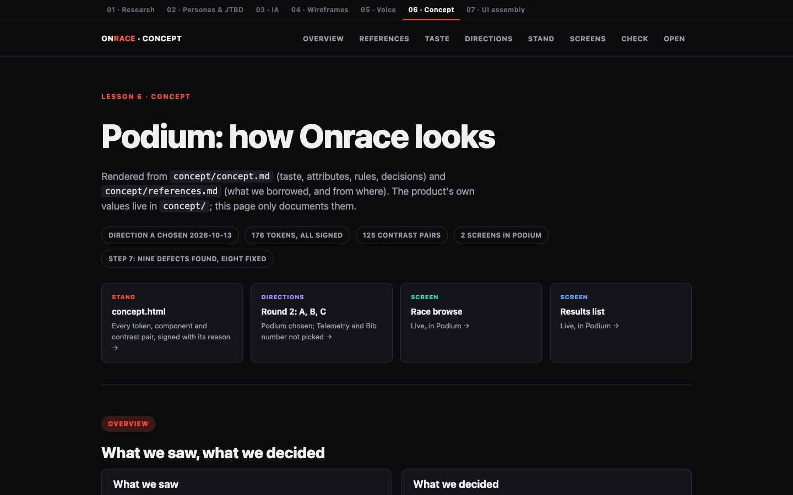
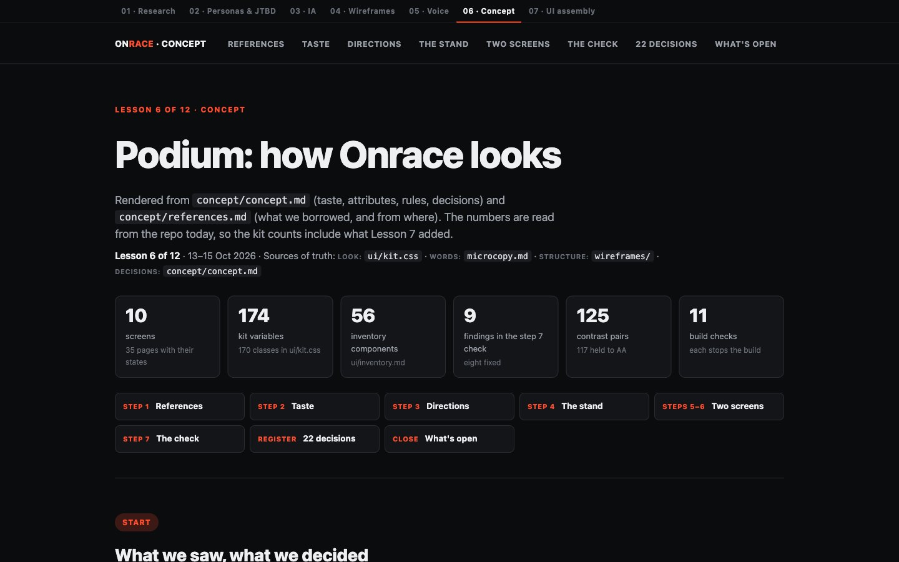
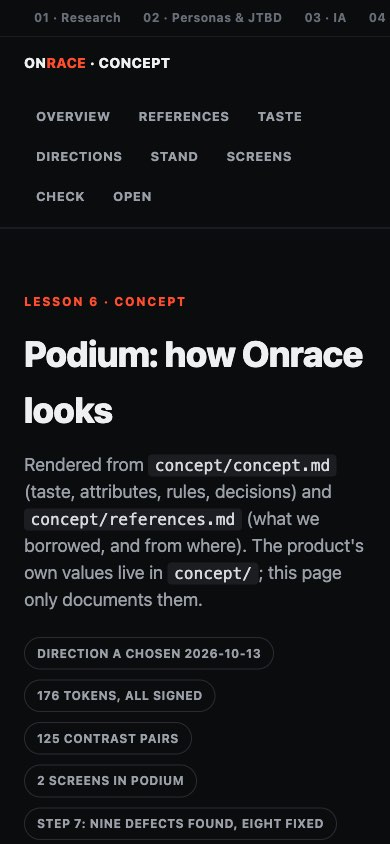
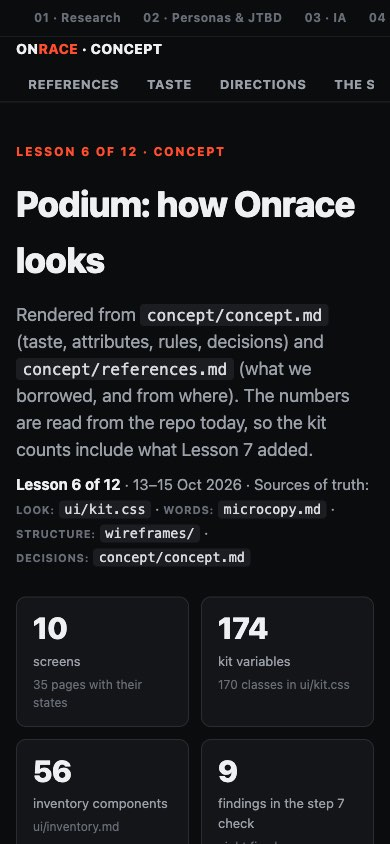


Lesson 07 overview
public/ui-overview.html: the same template, plus the live Wireframe / Design switch with a screen picker, "where each change goes in", the checks that stop the build, and the step 6 and 7 findings by disposition.
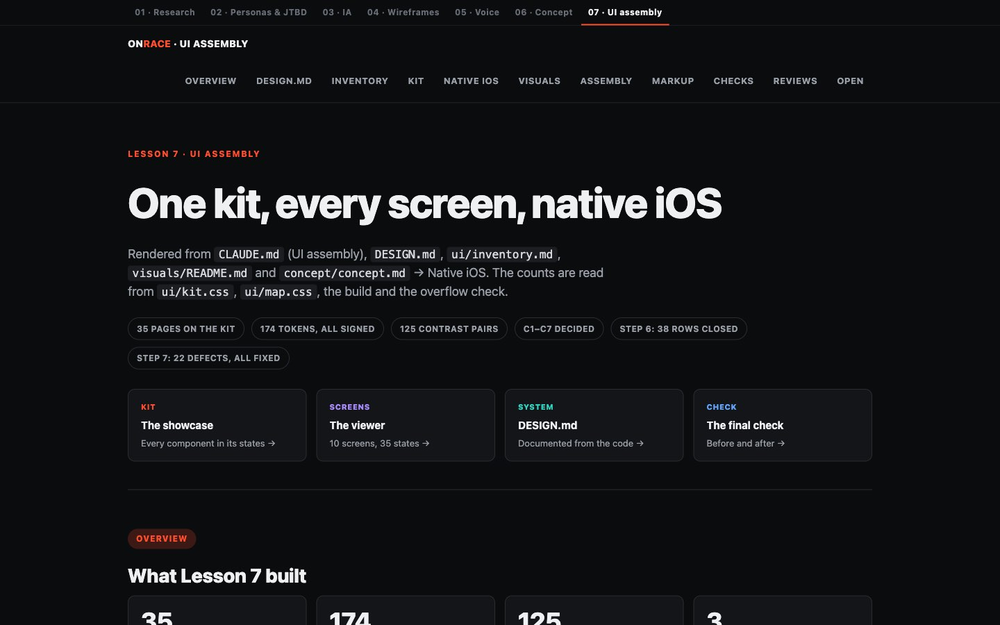
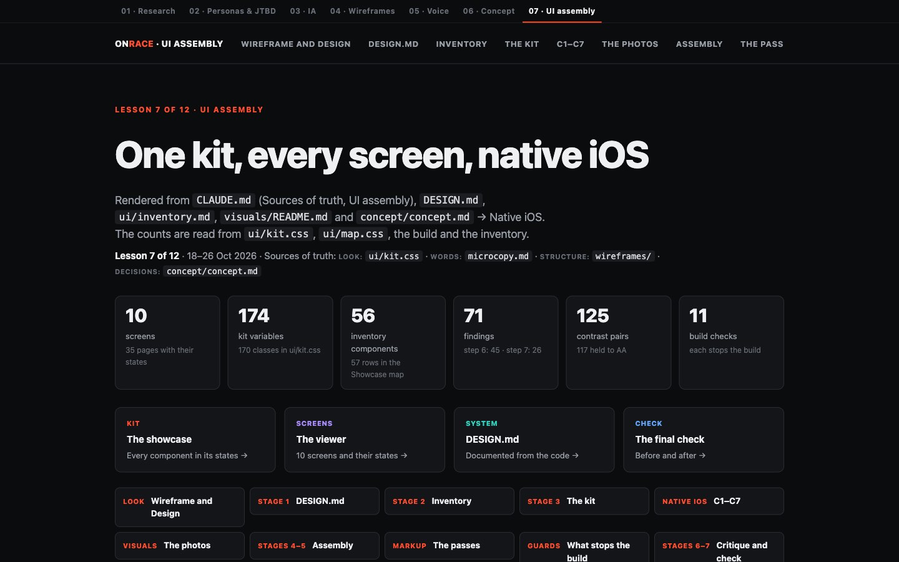
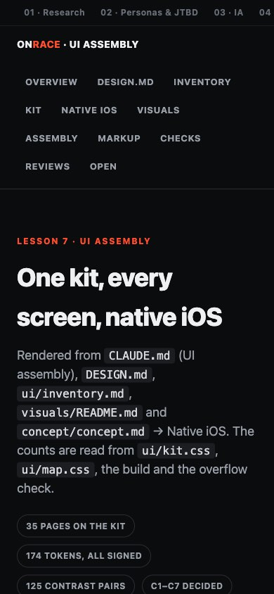
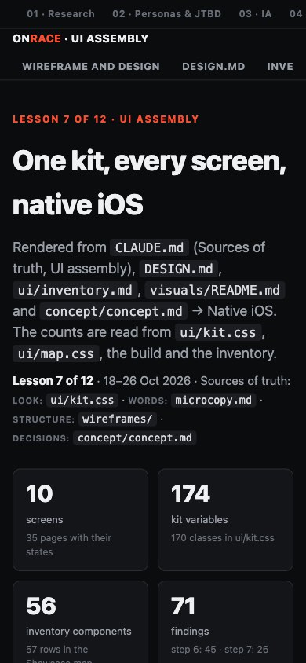


Kit showcase
ui/kit.html: a sticky nav by role with counts; each specimen with its components, classes, the screens that use it (linked to the viewer), its native iOS counterpart and where interaction is live; every state labelled.
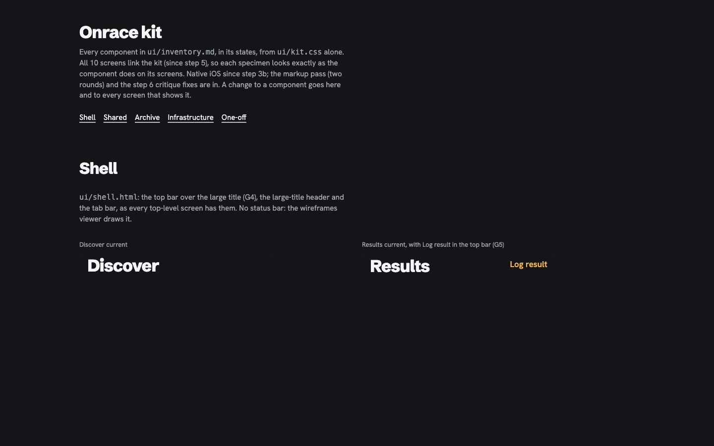

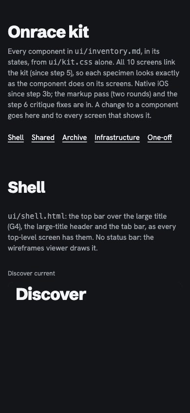
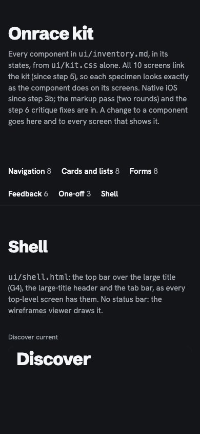